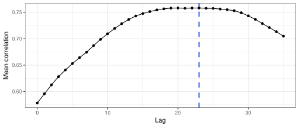
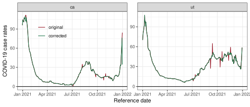
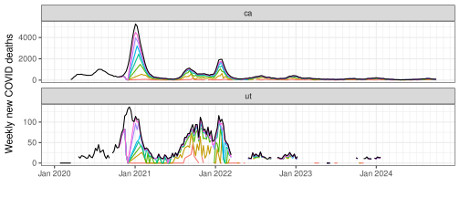
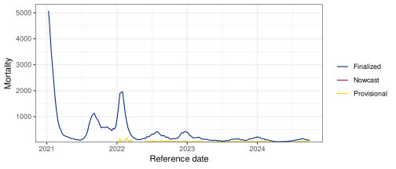
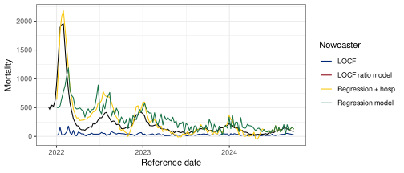

Data Cleaning, Versioning, Nowcasting With {epiprocess}
MICOM Tooling Workshop 2025
David Weber, Nat DeFries
Adapted from slides by Alice Cima, Rachel Lobay, Daniel McDonald, Ryan Tibshirani, with huge thanks to Logan Brooks, Xueda Shen, and Dmitry Shemetov
12 August 2025
The epiverse ecosystem
Interworking, community-driven, packages for epi tracking & forecasting.

1 (Versioned) Panel Data Processing Functions
Features - Correlations at different lags
The below plot addresses the question: “For each state, are case and death rates linearly associated across all days?”
To explore lagged correlations and how case rates associate with future death rates, we can use the
dt1parameter inepi_cor()to shift case rates by a specified number of days.

- We can see that, in general, lagging the case rates back by 14 days improves the correlations.
Features - Systematic lag analysis
The strongest correlation occurs at a lag of about 23 days, indicating that case rates are best correlated with death rates 23 days from now.
Features - Compute growth rates
- We can compute time-varying growth rates for two states:

- Try on your favorite dataset so far, and plot using:
- Also see rtestim for estimating RT values instead of the growth rate. https://dajmcdon.github.io/rtestim/ Similar usage
Features - Outlier detection
The
detect_outlr()function offers multiple outlier detection methods on a signal.The simplest is
detect_outlr_rm(), which works by calculating an outlier threshold using the rolling median and the rolling Interquartile Range (IQR) for each time point:
Threshold = Rolling Median ± (Detection Multiplier × Rolling IQR)
- Note that the default number of time steps to use in the rolling window by default is 21 and is centrally aligned.
- The detection multiplier default is 2 and controls how far away a data point must be from the median to be considered an outlier.
Features - Outlier detection
- Same idea as the previous slide; you can plot using
autoplot
Features – sliding a computation on an epi_df
The simplest way to use
epi_slideis tidy evaluation.For a grouped
epi_df,epi_slide()applies the computation to groups separately.
# A tibble: 6 × 4
geo_value time_value raw_cases cases_7dav
<chr> <date> <dbl> <dbl>
1 ca 2022-03-01 4310 4310
2 ca 2022-03-02 7044 5677
3 nc 2022-03-01 1231 1231
4 nc 2022-03-02 2243 1737
5 ny 2022-03-01 1487 1487
6 ny 2022-03-02 1889 1688epi_archive: Collection of epi_dfs
- full version history of a data set
- acts like a bunch of
epi_dfs — but stored compactly - allows similar functionality as
epi_dfbut using only data that would have been available at the time
Revisions
Epidemiology data gets revised frequently.
- We may want to use the data as it looked in the past.
- or we may want to examine the history of revisions.
epi_archive: Collection of epi_dfs
Subset of daily COVID-19 doctor visits (Optum) and cases (JHU CSSE) from all U.S. states in archive format:
→ An `epi_archive` object, with metadata:
ℹ Min/max time values: 2020-06-01 / 2021-11-30
ℹ First/last version with update: 2020-06-02 / 2021-12-01
ℹ Versions end: 2021-12-01
ℹ A preview of the table (1514489 rows x 5 columns):
Key: <geo_value, time_value, version>
geo_value time_value version percent_cli case_rate_7d_av
<char> <Date> <Date> <num> <num>
1: ak 2020-06-01 2020-06-02 NA 1.145652
2: ak 2020-06-01 2020-06-06 0.136815 1.145652
3: ak 2020-06-01 2020-06-08 0.136249 1.145652
4: ak 2020-06-01 2020-06-09 0.106744 1.145652
5: ak 2020-06-01 2020-06-10 0.106676 1.145652
---
1514485: wy 2021-11-26 2021-11-29 3.739819 23.207343
1514486: wy 2021-11-27 2021-11-28 NA 23.207343
1514487: wy 2021-11-28 2021-11-29 NA 23.207343
1514488: wy 2021-11-29 2021-11-30 NA 25.071781
1514489: wy 2021-11-30 2021-12-01 NA 25.464294Features – sliding computation over epi_archives
- We can apply a computation over different snapshots in an
epi_archive.
This functionality is very helpful in version aware forecasting. We will return with a concrete example.
Features – summarize revision behavior
revision_analysis()is a helper function that summarizes revision behavior of anepix_archive.
revision_data <- revision_analysis(
archive_cases_dv_subset,
case_rate_7d_av,
drop_nas = TRUE,
min_waiting_period = as.difftime(60, units = "days"),
within_latest = 0.2,
compactify_abs_tol = .Machine$double.eps^0.5,
)
head(revision_data$revision_behavior)# A tibble: 6 × 11
time_value geo_value n_revisions min_lag max_lag lag_near_latest spread
<date> <chr> <dbl> <drtn> <drtn> <drtn> <dbl>
1 2020-06-01 ca 12 1 days 546 days 1 days 0.248
2 2020-06-02 ca 12 1 days 545 days 1 days 0.416
3 2020-06-03 ca 11 1 days 544 days 1 days 0.115
4 2020-06-04 ca 11 1 days 543 days 1 days 0.342
5 2020-06-05 ca 7 1 days 520 days 1 days 0.0982
6 2020-06-06 ca 8 1 days 519 days 1 days 0.188
# ℹ 4 more variables: rel_spread <dbl>, min_value <dbl>, max_value <dbl>,
# median_value <dbl>Features – summarize revision behavior
── An epi_archive spanning 2020-06-01 to 2021-11-30. ──── Min lag (time to first version): min median mean max
1 days 1 days 1 days 2 days── Fraction of epi_key + time_values with No revisions:
• 523 out of 1,956 (26.74%)
Quick revisions (last revision within 3 days of the `time_value`):
• 531 out of 1,956 (27.15%)
Few revisions (At most 3 revisions for that `time_value`):
• 1,199 out of 1,956 (61.3%)
── Fraction of revised epi_key + time_values which have:
Less than 0.1 spread in relative value:
• 1,312 out of 1,433 (91.56%)
Spread of more than 6.351 in actual value (when revised):
• 39 out of 1,433 (2.72%)
── Days until within 20% of the latest value: min median mean max
1 days 1 days 1.7 days 84 daysTry on your favorite archive so far
Visualize revision patterns: Autoplots roll out!

2 Basic Nowcasting in the Epiverse
Case study: NCHS mortality
- In this example, we’ll demonstrate the concept of nowcasting using NHCS mortality data. (the number of weekly new deaths with confirmed or presumed COVID-19, per 100,000 population).
- We will work with provisional data (real-time reports) and compare them to finalized data (final reports).
- The goal is to estimate or nowcast the mortality rate for weeks when only provisional data is available.
Fetch versioned data
Let’s fetch versioned mortality data from the API (pub_covidcast) for CA (geo_values = "ca") and the signal of interest (deaths_covid_incidence_num) over early 2024.
# Fetch the versioned NCHS mortality data (weekly)
nchs_archive <- pub_covidcast(
source = "nchs-mortality",
signals = "deaths_covid_incidence_num",
geo_type = "state",
time_type = "week",
geo_values = c("ca", "tx"),
time_values = epirange(202001, 202440),
issues = "*"
) |>
select(geo_value, time_value, version = issue, mortality = value) |>
as_epi_archive(compactify = TRUE)You’ll need an API key to actually run this, unfortunately
Versioning analysis – latency
- Question: What is the latency of NCHS data?
# A tibble: 10 × 3
geo_value time_value min_lag
<chr> <date> <drtn>
1 ca 2024-04-07 1 weeks
2 ut 2021-09-12 1 weeks
3 ca 2022-03-27 2 weeks
4 ca 2021-02-28 1 weeks
5 ca 2020-08-02 18 weeks
6 ut 2021-11-07 1 weeks
7 ut 2022-04-24 1 weeks
8 ut 2022-06-19 2 weeks
9 ut 2023-02-19 1 weeks
10 ca 2022-05-15 2 weeks- We randomly sampled some dates to check if there is a consistent latency pattern.
- Understanding latency prevents us from using data that we shouldn’t have access to.
Versioning analysis – backfill
- Question: How long does it take for the reported value to be close to the finalized value?
revision_data$revision_behavior |> select(geo_value, time_value, lag_near_latest) |> slice_sample(n = 10)# A tibble: 10 × 3
geo_value time_value lag_near_latest
<chr> <date> <drtn>
1 ut 2020-05-31 27 weeks
2 ca 2021-04-04 5 weeks
3 ut 2022-08-07 2 weeks
4 ca 2022-08-21 3 weeks
5 ca 2023-07-23 3 weeks
6 ut 2020-03-29 36 weeks
7 ca 2020-11-01 5 weeks
8 ca 2024-03-31 4 weeks
9 ca 2024-07-14 3 weeks
10 ca 2024-08-18 3 weeks - It generally takes at least 4 weeks for reported value to be within 20% (default in
revision_analysis()) of the finalized value. - We can change the threshold of percentage difference by specifying the
within_latestargument ofrevision_analysis().
Revision pattern visualization
This shows the finalized rates in comparison to multiple revisions to see how the data changes over time:
Ratio nowcaster: jumping from provisional to finalized value
- Recall, the goal of nowcast at date \(t\) is to use project the finalized value of \(y_t,\) given the information available on date \(t\).
- A very simple nowcaster is the ratio between finalized and provisional value.
How can we sensibly estimate this quantity?
Ratio nowcaster: building training samples
- At nowcast date \(t,\) would have received reports with versions up to and including \(t.\)
- We need to build training samples, which
- correctly aligns finalized value against provisional value
- uses features that would have been available at test time
- have enough samples to ensure sensible estimation results
- Build training samples by treating dates prior to date \(t\) as actual nowcast dates.
- What is the provisional data on that date?
- Have we received finalized value for that date?
Ratio nowcaster: building training samples
- At an earlier nowcast date \(t_0,\) we define
- Provisional value as the reported value of \(Y_{s_0}\) with version \(t_0.\) Here \(s_0\) is the largest occurence date among all values reported up until \(t_0.\)
- Finalized value as the (potentially unobserved) finalized value of \(Y_{s_0}.\)
- We only know in hindsight when reported value of \(Y_{s_0}\) is finalized – need an approximation.
Revisiting revision_analysis()
Recall, revision_analysis() reports the number of days to be within 20% (default value) of finalized value
# A tibble: 5 × 3
geo_value time_value lag_near_latest
<chr> <date> <drtn>
1 ca 2024-02-18 4 weeks
2 ut 2023-12-03 3 weeks
3 ut 2022-10-16 3 weeks
4 ca 2020-12-20 8 weeks
5 ut 2022-09-11 3 weeks 0% 25% 50% 75% 100%
NA NA NA NA NA Let’s say data reported NA days after reference date is good enough to be considered finalized.
Ratio nowcaster: test time feature
- Due to latency, provisional values may not be available at lag 0
- We use last-observation-carried-forward (LOCF) to impute missing values at test time
- Precisely, at test time \(t,\) we use last observed data point (among all those reported up through time \(t\))
Nowcasting at a single date: building training samples
- Searching for provisional values, at previous hypothetical nowcast dates.
- Searching for finalized values, at previous hypothetical nowcast dates.
Nowcasting at a single date: estimating ratio model
- After searching for both provisional and finalized values, we merge them together and estimate the ratio. ::: {.cell layout-align=“center”}
ratio <- finalized_data |>
inner_join(initial_data, by = c("geo_value", "time_value")) |>
mutate(ratio = finalized_val / initial_val) |>
pull(ratio) |>
median(na.rm = TRUE):::
Nowcasting at a single date: test feature construction
Nowcasting at a single date: producing the nowcast
nowcast <- last_avail * ratio
finalized_val <- epix_as_of(nchs_archive, nchs_archive$versions_end) |>
filter(time_value == nowcast_date) |>
pull(mortality)
nowcast_final = data.frame(Nowcast = nowcast, `Finalized value` = finalized_val, check.names=FALSE)
knitr::kable(nowcast_final)| Nowcast | Finalized value |
|---|---|
| NA | 948 |
Nowcasting for multiple dates
- All previous manipulations should really be seen as a template for all nowcast dates.
- The template computation sould be applied over all nowcast dates, but we must respect data versioning!
epix_slide()is designed just for this! It behaves similarly toepi_slide.- Key exception:
epix_slide()is version aware: the sliding computation at any reference time \(t\) is performed on data that would have been available as of t.
Nowcasting for multiple dates via epix_slide()
We begin by templatizing our previous operations.
nowcaster <- function(x, g, t, wl=180, appx=approx_final_lag) {
initial_data <- x$DT |>
group_by(geo_value, time_value) |>
filter(version == min(version)) |>
filter(time_value >= t - wl - appx & time_value <= t - appx) |>
rename(initial_val = mortality) |>
select(geo_value, time_value, initial_val)
finalized_data <- x$DT |>
group_by(geo_value, time_value) |>
filter(version == max(version)) |>
filter(time_value >= t - wl - appx & time_value <= t - appx) |>
rename(finalized_val = mortality) |>
select(geo_value, time_value, finalized_val)
ratio <- finalized_data |>
inner_join(initial_data, by = c("geo_value", "time_value")) |>
mutate(ratio = finalized_val / initial_val) |>
pull(ratio) |>
median(na.rm = TRUE)
last_avail <- epix_as_of(x, t) |>
slice_max(time_value) |>
pull(mortality)
tibble(geo_value = x$geo_value, target_date = t, nowcast = last_avail * ratio)
}Sanity check of epix_slide()
slided_nowcast_1d = epix_slide(
.x = nchs_archive,
.f = nowcaster,
.before = Inf,
.versions = nowcast_date,
.all_versions = TRUE
)
nowcast_check = data.frame(`Manual nowcast` = nowcast, `Slided nowcast` = slided_nowcast_1d$nowcast, check.names = FALSE)
knitr::kable(nowcast_check)| Manual nowcast | Slided nowcast |
|---|---|
| NA | NA |
Nowcasting for multiple dates via epix_slide()
Details of epix_slide()
.finepix_slide()can be specified with the same form of custom function asepi_slide().
- Mandatory variables of
.fwould have different forms depending on the value of.all_versions.
Details of epix_slide()
- When
.all_versions = FALSE,epix_slide()essentially iterates the templatized computation over snapshots. - Said differently, when
.all_versions = FALSE, data accessed at any sliding iteration only involves a single version.
- Hence:
x: anepi_dfwith same column names as archive’sDT, minus theversioncolumn.g: a one-row tibble containing the values of groupping variables of the associated group.t: theref_time_valueof the current window....: additional arguments.
Details of epix_slide()
- When
.all_versions = FALSE, data accessed at any sliding iteration involves versions up to and including .version.
- Hence:
x: anepi_archive, with version up to and including.version.g: a one-row tibble containing the values of groupping variables of the associated group.t: the.versionof the current window....: additional arguments.
Details of epix_slide()
Details of epix_slide()
nowcaster <- function(x, g, t, wl=180, appx=approx_final_lag) {
initial_data <- x$DT |>
group_by(geo_value, time_value) |>
filter(version == min(version)) |>
filter(time_value >= t - wl - appx & time_value <= t - appx) |>
rename(initial_val = mortality) |>
select(geo_value, time_value, initial_val)
finalized_data <- x$DT |>
group_by(geo_value, time_value) |>
filter(version == max(version)) |>
filter(time_value >= t - wl - appx & time_value <= t - appx) |>
rename(finalized_val = mortality) |>
select(geo_value, time_value, finalized_val)
ratio <- finalized_data |>
inner_join(initial_data, by = c("geo_value", "time_value")) |>
mutate(ratio = finalized_val / initial_val) |>
pull(ratio) |>
median(na.rm=TRUE)
last_avail <- epix_as_of(x, t) |>
slice_max(time_value) |>
pull(mortality)
tibble(geo_value = x$geo_value, target_date = t, nowcast = last_avail * ratio)
}Visualize nowcasts
We are now finally able to compare nowcasts against first available reports:
- The real-time counts tend to be biased below the finalized counts. Nowcasted values tend to provide a much better approximation of the truth (at least for these dates).
Smoothing nowcasts
- Nowcasts are quite volatile, reflecting the provisional counts are far from complete.
- We can use a trailing average to smooth them.
Evaluation using MAE
Assume we have prediction \(\hat y_{t}\) for the provisional value at time \(t\).
Then for \(y_{t}\) over times \(t = 1, \dots, N\), then we may compute error metrics like mean absolute error (MAE).
MAE measures the average absolute difference between the nowcast and finalized values.
\[MAE = \frac{1}{N} \sum_{t=1}^N |y_{t}- \hat y_{t}|\]
- Note that it’s scale-dependent, meaning it can vary depending on the units of the data (e.g., cases, deaths, etc.).
Evaluation using MAE
Let’s numerically evaluate our point nowcasts for the provisional values of a time series (e.g., COVID-19 mortality) using MAE.
| Smoothed MAE | Unsmoothed nowcast MAE | Provisional value MAE |
|---|---|---|
| NaN | NaN | 201.0909 |
<!– # Nowcasting with Regression
Nowcasting: Moving from one predictor to multiple
- The ratio model predicts the finalized value of \(Y_t\) from \(Y_{s}\), the last value included in the version \(t\) report.
- \(Y_s\) is the closest in time we can get to \(Y_t\), but we also expect it to be the least reliable value in version \(t\).
- Can we add \(Y_{s - 1}\), \(Y_{s - 2}\), and even other data sources to the model to try to find a good mix of relevant and reliable signals?
- Regressions models will let us do that.
- Let’s start “simple”: predicting \(Y_t\) with whichever of \(Y_{t - 1}\) and \(Y_{t - 2}\) are available in version \(t\).
Start with a single nowcast date
We’re only looking at California in this example: ::: {.cell layout-align=“center”}
:::
We’ll start experimenting with just a single nowcast date:
What data would we have had available then? ::: {.cell layout-align=“center”}
# This is the version history we'd have seen at that point:
nchs_ca_past_archive <- nchs_ca_archive |>
epix_as_of(trial_nowcast_date, all_versions = TRUE)
# And this is what the latest version was at that point:
nchs_ca_past_latest <- nchs_ca_past_archive |>
epix_as_of(trial_nowcast_date):::
What predictors were available at test time?
# At version t, our target is finalized Y_t:
target_time_value <- trial_nowcast_date
# Check which of Y_{t-1} and Y_{t-2} are available, assign distinct names:
predictor_descriptions <- nchs_ca_past_latest |>
filter(as.integer(target_time_value - time_value) <= 2 * 7) |>
drop_na(mortality) |>
transmute(
varname = "mortality",
lag_days = as.integer(trial_nowcast_date - time_value),
predictor_name = paste0(varname, "_lag", lag_days, "_realtime")
)
predictor_descriptions# A tibble: 2 × 3
varname lag_days predictor_name
<chr> <int> <chr>
1 mortality 14 mortality_lag14_realtime
2 mortality 7 mortality_lag7_realtime Line up with training data
We need to make sure to line up our predictors in nchs_ca_past_latest with training data that is analogous (e.g., “equally unreliable”).
Actual implementation: ::: {.cell layout-align=“center”}
Code
library(data.table)
get_predictor_training_data <- function(archive, varname, lag_days, predictor_name) {
epikeytime_names <- setdiff(key(archive$DT), "version")
requests <- unique(archive$DT, by = epikeytime_names, cols = character())[
, version := time_value + ..lag_days
]
setkeyv(requests, c(epikeytime_names, "version"))
result <- archive$DT[
requests, c(key(archive$DT), varname), roll = TRUE, nomatch = NULL, allow.cartesian = TRUE, with = FALSE
][
, time_value := version
][
, version := NULL
]
nms <- names(result)
nms[[match(varname, nms)]] <- predictor_name
setnames(result, nms)
setDF(result)
as_tibble(result)
}:::
# A tibble: 36 × 3
geo_value time_value mortality_lag7_realtime
<chr> <date> <dbl>
1 ca 2020-12-06 13
2 ca 2021-02-28 78
3 ca 2021-03-07 54
4 ca 2021-03-14 43
5 ca 2021-03-21 19
6 ca 2021-03-28 21
7 ca 2021-04-04 23
8 ca 2021-04-11 20
9 ca 2021-04-18 18
10 ca 2021-04-25 20
# ℹ 26 more rowsThe first value here is a version of \(Y_{\text{2020-11-30}}\) as it was reported in version 2020-12-06. We expect it to have similar characteristics as \(Y_{t - 7\text{ days}}\) as reported in version \(t\) for other values of \(t\).
Get multiple predictors
predictors <- predictor_descriptions |>
pmap(function(varname, lag_days, predictor_name) {
get_predictor_training_data(nchs_ca_past_archive, varname, lag_days, predictor_name)
}) |>
reduce(full_join, by = c("geo_value", "time_value"))
predictors# A tibble: 50 × 4
geo_value time_value mortality_lag14_realtime mortality_lag7_realtime
<chr> <date> <dbl> <dbl>
1 ca 2020-12-06 66 13
2 ca 2020-12-13 13 NA
3 ca 2021-02-14 557 NA
4 ca 2021-02-21 474 NA
5 ca 2021-02-28 478 78
6 ca 2021-03-07 415 54
7 ca 2021-03-14 282 43
8 ca 2021-03-21 176 19
9 ca 2021-03-28 164 21
10 ca 2021-04-04 117 23
# ℹ 40 more rows- A full join is nice to show differences in missingness
- But before training we’re going to
drop_na()and end up with something more like an inner join
Combine with target data
For each training time \(t'\), approximate finalized \(Y_{t'}\) with \(Y_{t'}\) as reported at our trial nowcast date \(t\). * Based on earlier analysis, we shouldn’t really trust this for \(t'\) within 49 days of \(t\), so filter those training times out.
Fit the regression model
training_test <- full_join(predictors, target, by = c("geo_value", "time_value"))
training <- training_test |> drop_na()
test <- training_test |> filter(time_value == trial_nowcast_date)
fit <- training |>
select(all_of(predictor_descriptions$predictor_name), mortality_semistable) |>
lm(formula = mortality_semistable ~ .)
pred <- tibble(
nowcast_date = trial_nowcast_date,
target_date = target_time_value,
prediction = unname(predict(fit, test))
)
pred# A tibble: 1 × 3
nowcast_date target_date prediction
<date> <date> <dbl>
1 2022-01-02 2022-01-02 483.Our prediction
Backtesting our nowcaster
We’ll wrap our nowcasting code in a function and epix_slide() again.
- And get an error — some versions \(t\) don’t include a value \(Y_{t-1}\) or \(Y_{t-2}\) (e.g., version 2022-06-26 doesn’t).
- So let’s try looking farther into the past at \(Y_{t-3}\), etc.
- … but don’t look too far: \(Y_{t-5}\) is the limit.
- The same regression approach applies to models with 3 or more features.
- Including more features tends to improve performance, up to a point.
Some other modifications
- Add some basic checks throughout our nowcasting function.
- Make sure we have “enough” training data to fit a model.
- Add ability to look not just at provisional \(Y_{t-k}\), but also provisional \(Z_{t-k}\) for some other signal \(Z\).
- \(Z\) here is HHS/NHSN COVID-19 hospitalization reporting.
- This was daily-resolution and daily-reporting-cadence for some time; it’s possible but a bit tricky to combine with our weekly-resolution weekly-cadence archive.
- Exclude a potential predictor if it doesn’t have much training data available.
- \(Z\) here is HHS/NHSN COVID-19 hospitalization reporting.
- Allow for linear regression or quantile regression at the median level (tau = 0.5)
Code
regression_nowcaster <- function(archive, settings, return_info = FALSE) {
if (!inherits(archive, "epi_archive")) {
stop("`archive` isn't an `epi_archive`")
}
if (length(unique(archive$DT$geo_value)) != 1L) {
stop("Expected exactly one unique `geo_value`")
}
if (archive$time_type == "day") {
archive <- thin_daily_to_weekly_archive(archive)
}
nowcast_date <- archive$versions_end
target_time_value <- nowcast_date
latest_edf <- archive |> epix_as_of(nowcast_date)
# print(nowcast_date)
predictor_descriptions <-
latest_edf |>
mutate(lag_days = as.integer(nowcast_date - time_value)) |>
select(-c(geo_value, time_value)) |>
pivot_longer(-lag_days, names_to = "varname", values_to = "value") |>
drop_na(value) |>
inner_join(settings$predictors, by = "varname", unmatched = "error") |>
filter(abs(lag_days) <= max_abs_shift_days) |>
arrange(varname, abs(lag_days)) |>
group_by(varname) |>
filter(seq_len(n()) <= max_n_shifts[[1]]) |>
ungroup() |>
mutate(predictor_name = paste0(varname, "_lag", lag_days, "_realtime")) |>
select(varname, lag_days, predictor_name)
predictor_edfs <- predictor_descriptions |>
pmap(function(varname, lag_days, predictor_name) {
get_predictor_training_data(archive, varname, lag_days, predictor_name)
}) |>
lapply(na.omit) |>
keep(~ nrow(.x) >= settings$min_n_training_per_predictor)
if (length(predictor_edfs) == 0) {
stop("Couldn't find acceptable predictors in the latest data.")
}
predictors <- predictor_edfs |>
reduce(full_join, by = c("geo_value", "time_value"))
target <- latest_edf |>
filter(time_value <= max(time_value) - settings$days_until_target_semistable) |>
select(geo_value, time_value, mortality_semistable = mortality)
training_test <- full_join(predictors, target, by = c("geo_value", "time_value"))
training <- training_test |>
drop_na() |>
slice_max(time_value, n = settings$max_n_training_intersection)
test <- training_test |>
filter(time_value == nowcast_date)
if (isTRUE(settings$median)) {
fit <- training |>
select(any_of(predictor_descriptions$predictor_name), mortality_semistable) |>
quantreg::rq(formula = mortality_semistable ~ ., tau = 0.5)
} else {
fit <- training |>
select(any_of(predictor_descriptions$predictor_name), mortality_semistable) |>
lm(formula = mortality_semistable ~ .)
}
pred <- tibble(
geo_value = "ca",
nowcast_date = nowcast_date,
target_date = target_time_value,
prediction = unname(predict(fit, test))
)
if (return_info) {
return(tibble(
coefficients = list(coef(fit)),
predictions = list(pred)
))
} else {
return(pred)
}
}
# We can apply this separately for each nowcast_date to ensure that we consider
# the latest possible value for every signal, though whether that is advisable
# or not may depend on revision characteristics of the signals.
thin_daily_to_weekly_archive <- function(archive) {
key_nms <- key(archive$DT)
val_nms <- setdiff(names(archive$DT), key_nms)
update_tbl <- as_tibble(archive$DT)
val_nms |>
lapply(function(val_nm) {
update_tbl[c(key_nms, val_nm)] |>
# thin out to weekly, making sure that we keep the max time_value with non-NA value:
filter(as.POSIXlt(time_value)$wday == as.POSIXlt(max(time_value[!is.na(.data[[val_nm]])]))$wday) |>
# re-align:
mutate(
time_value = time_value - as.POSIXlt(time_value)$wday, # Sunday of same epiweek
old_version = version,
version = version - as.POSIXlt(version)$wday # Sunday of same epiweek
) |>
slice_max(old_version, by = all_of(key_nms)) |>
select(-old_version) |>
as_epi_archive(other_keys = setdiff(key_nms, c("geo_value", "time_value", "version")),
compactify = TRUE)
}) |>
reduce(epix_merge, sync = "locf")
}
# Baseline model:
locf_nowcaster <- function(archive) {
nowcast_date <- archive$versions_end
target_time_value <- nowcast_date
latest_edf <- archive |> epix_as_of(nowcast_date)
latest_edf |>
complete(geo_value, time_value = target_time_value) |>
arrange(geo_value, time_value) |>
group_by(geo_value) |>
fill(mortality) |>
ungroup() |>
filter(time_value == target_time_value) |>
transmute(
geo_value,
nowcast_date = nowcast_date,
target_date = time_value,
prediction = mortality
)
}Model settings
After fixing, enhancing, and parameterizing our regression nowcaster, we’ll compare two different configurations:
- one with just mortality-based predictions
- one that also uses hospitalizations as a predictor
- and two that use quantile reg instead of linear reg
Model settings
reg1_settings <- list(
predictors = tribble(
~varname, ~max_abs_shift_days, ~max_n_shifts,
"mortality", 35, 3,
),
min_n_training_per_predictor = 30, # or else exclude predictor
days_until_target_semistable = 7 * 7, # filter out unstable when training (and evaluating)
min_n_training_intersection = 20, # or else raise error
max_n_training_intersection = Inf # or else filter down rows
)
reg2_settings <- list(
predictors = tribble(
~varname, ~max_abs_shift_days, ~max_n_shifts,
"admissions", 35, 3,
"mortality", 35, 3,
),
min_n_training_per_predictor = 30, # or else exclude predictor
days_until_target_semistable = 7 * 7, # filter out unstable when training (and evaluating)
min_n_training_intersection = 20, # or else raise error
max_n_training_intersection = Inf # or else filter down rows
)
reg3_settings <- c(reg1_settings, median = TRUE)
reg4_settings <- c(reg2_settings, median = TRUE)Comparison: linear regression
Comparison: quantile regression

Evaluations
n_models <- length(unique(nowcast_comparison$Nowcaster))
nowcast_comparison |>
# Filter evaluation based on target stability
filter(target_date <= nchs_ca_archive$versions_end - 49) |>
# Filter evaluated tasks to those with all models available
group_by(target_date) |>
filter(sum(!is.na(prediction)) == n_models) |>
ungroup() |>
summarize(.by = Nowcaster,
MAE = mean(abs(mortality - prediction)),
MAPE = 100*mean(abs(mortality - prediction)/abs(mortality)))# A tibble: 0 × 3
# ℹ 3 variables: Nowcaster <chr>, MAE <dbl>, MAPE <dbl>Mea culpa
This quickly became complicated and we’ve glossed over some core concepts. We’ll explain concepts of regression, lagged features, and evaluation more carefully tomorrow.
Aside on nowcasting
To some Epis, “nowcasting” can be equated with “estimate the time-varying instantaneous reproduction number, \(R_t\)”
Ex. using the number of reported COVID-19 cases in British Columbia between Jan. 2020 and Apr. 15, 2023.
This data is the number of reported COVID-19 cases in British Columbia between January 2020 and April 15, 2023. The values are.up-to-date as of August 2023. ::: {.cell layout-align=“center”} ::: {.cell-output-display} ::: :::
Group built
{rtestim}doing for this nonparametrically.We may come back to this later…

Nowcasting — cmu-delphi/micom-tooling-workshop-2025